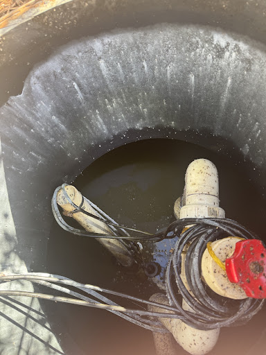
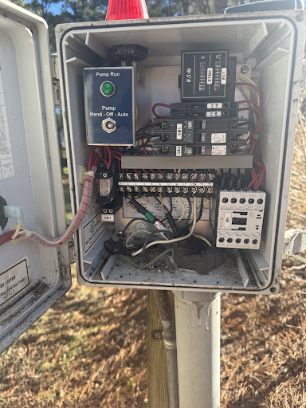
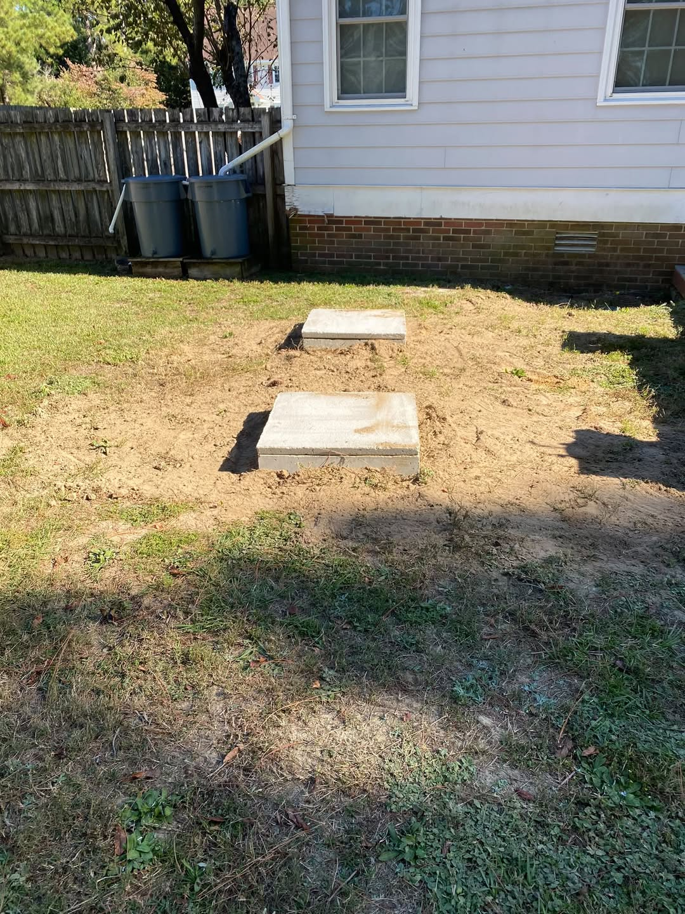

Ten people asked me for this
Nobody knows where the tank is
Especially common on a house you’ve just moved into. It is not a problem, it’s an afternoon.
You can’t look after a system you’ve never seen, and you can’t check a quote for a system you can’t find. So the first job is finding it.
How it usually goes
Located, opened, and shown to you.
I locate the tank, dig the lid out and open it up. Then I walk you through what you’re looking at — where the inlet and outlet are, where the filter sits, which way the lines run, and where the distribution box is.
Most people have genuinely never seen any of it. That half hour is the difference between being able to judge a future quote and having to take someone’s word for it.
Then put risers on it
While the tank is open, fitting risers brings the openings to ground level. It means nobody ever has to dig again — not you, not me, not the next person who services it.
Before digging
If the house is new to you, it is worth checking whether the county has a permit drawing on file for the system. Sometimes it exists and saves time. Often it doesn’t, and we find it the direct way.
Your yard afterwards
Digging is digging — the ground gets turned over where the lid comes out. It is backfilled and levelled, and the grass comes back. The photographs on this site are real jobs, so you can see what the ground actually looks like on the day.
What you’ll be shown
Six things, and only one of them is the expensive one.
This is the drawing I walk people through once the lid is off.

Once the lid is off
What you get shown.




New house, no idea where the tank is?
Call and describe the property. It is one of the most common reasons people ring me.
Open seven days · Clayton · Johnston County